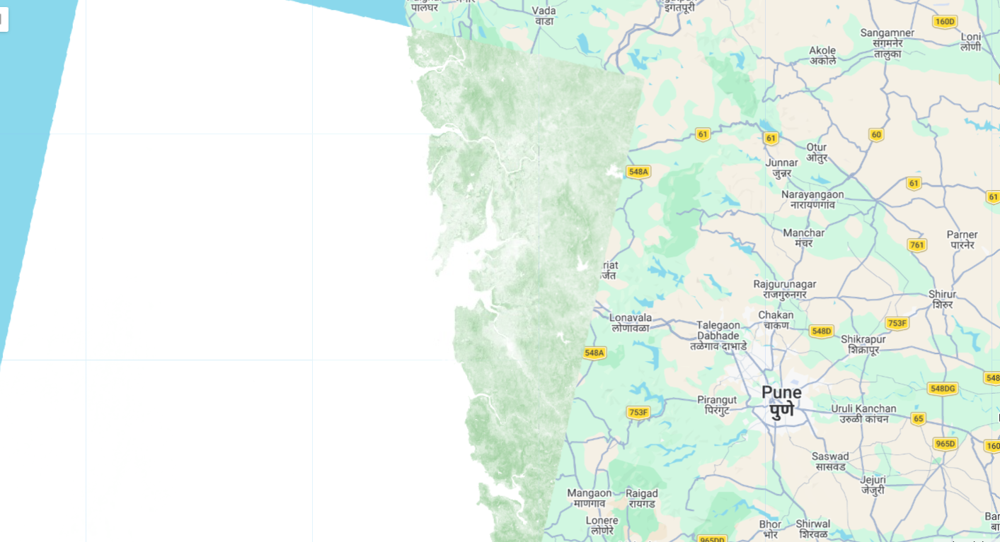
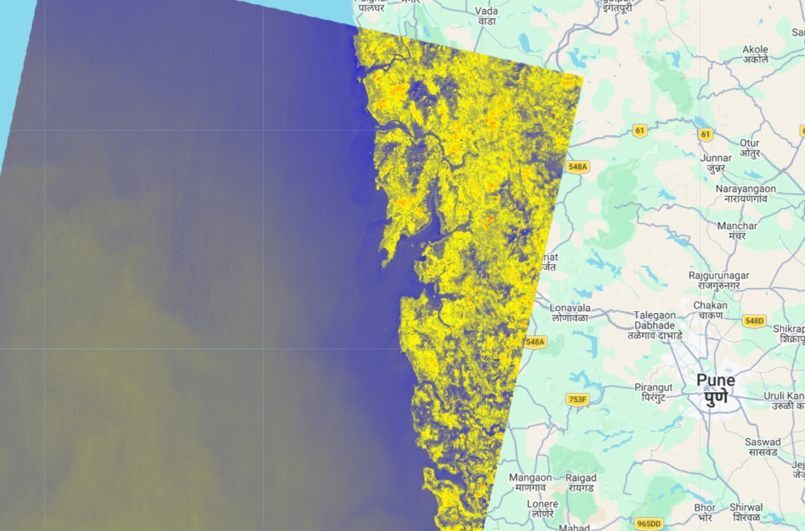

Analyze heat zones using Landsat satellite data (NDVI & LST)
This system uses satellite-based environmental parameters like Land Surface Temperature (LST) and Vegetation Index (NDVI) to identify Urban Heat Island zones.


High Heat Zone
Moderate Heat Zone
Low Heat Zone